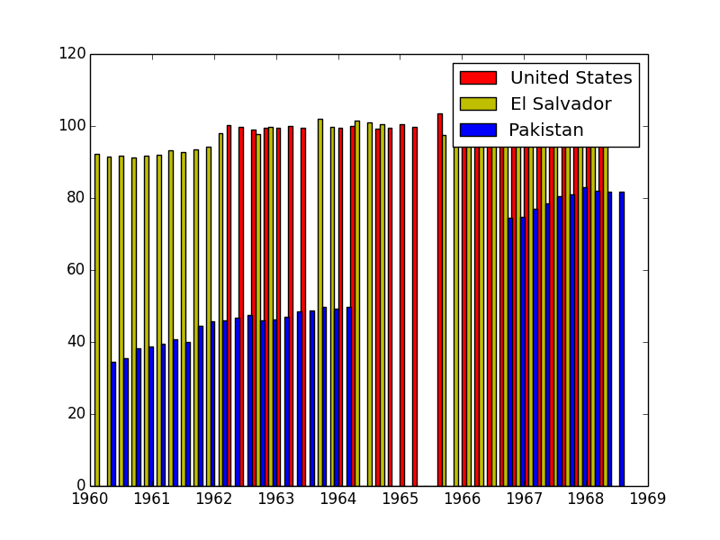
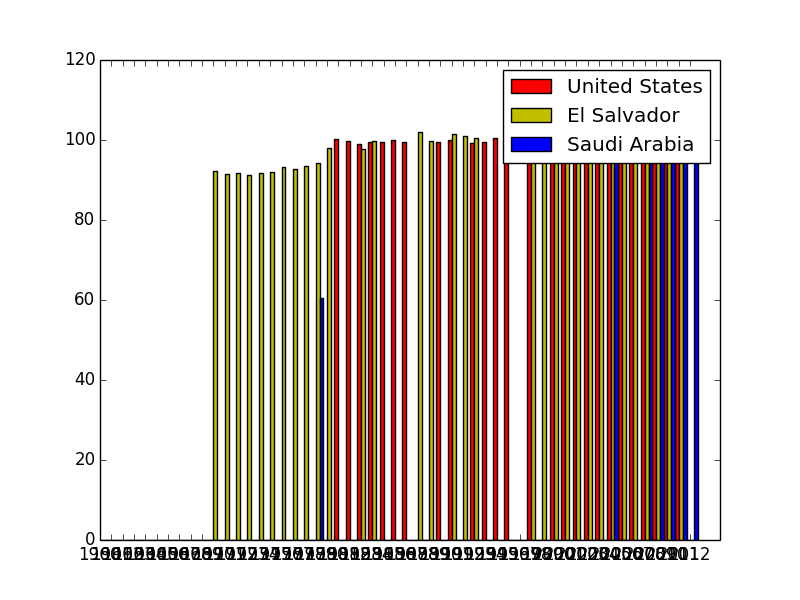
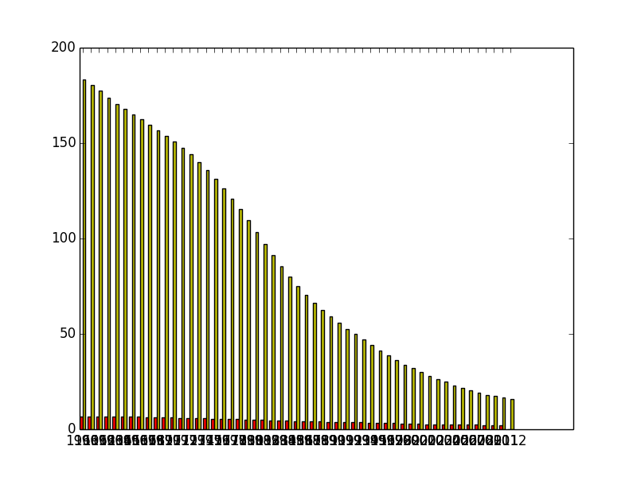
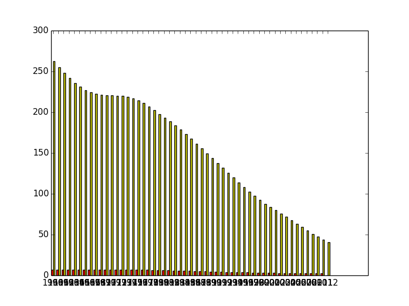
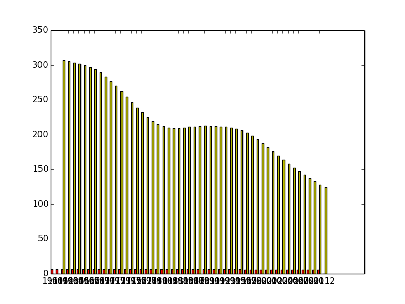
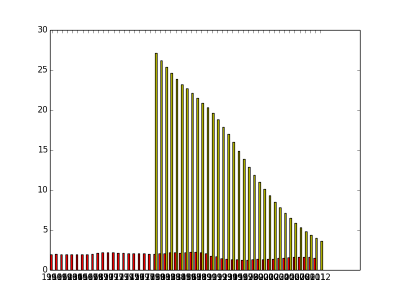

Smart non-programmers who want to code
Lazy Sunday reading the New York Times

Lazy Sunday reading the New York Times
Pick a project you're passionate about
Girls-to-boys school attendance ratios (primary and secondary)
How do they compare?
Girls-to-boys school attendance ratios (primary and secondary) 
Girls-to-boys school attendance ratios (primary and secondary) 
Should development resources be spent on health, or on family planning?
Childhood deaths, children per woman in El Salvador 
Childhood deaths, children per woman in Bangladesh 
Childhood deaths, children per woman in Nigeria 
Childhood deaths, children per woman in Estonia 
Lazy Sunday hacking on data
Search "World Bank Indicators"
data.worldbank.org/indicator
print "Hello World"cd Projects/personal-projects/programming-for-social-scientists
python read_data.py[Erase the print statement]
import csvimport csv
csvfile = open('cellphones.csv', 'rU')import csv
csvfile = open('cellphones.csv', 'rU')
reader = csv.DictReader(csvfile){
'Country Code': 'FIN',
'Country Name': 'Finland',
'2007': '114.924474',
'2008': '128.4719884',
'2009': '144.1530224'
}import csv
csvfile = open('cellphones', 'rU')
reader = csv.DictReader(csvfile)
for row in reader:
print rowRun it! In your terminal:
cd Projects/personal-projects/programming-for-social-scientists
python read_data.pyimport csv
csvfile = open('cellphones', 'rU')
reader = csv.DictReader(csvfile)
for row in reader:
if row['Country Name'] == "Finland":
print rowhttp://matplotlib.org/gallery.html

python basic_chart.pyHow do we get the other countries data?
What needs to be done in order to extract data?